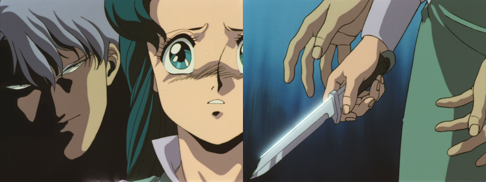
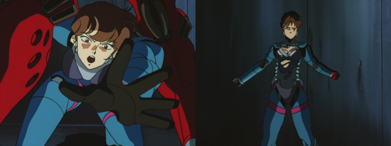
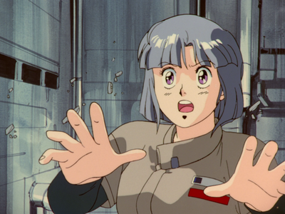

"Hug me Tight:"
Reflections on Bubblegum Crisis, Episode 6:
"Red Eyes" (1989)
27 March thru 26 April 2022 [Permanent link]
WARNING:
spoilers ahead. Please don't read this before watching the episode; it
might ruin your enjoyment of it.
Well, here it is. A sequel article. I really burned myself out on
the last one, so
deciding to write this is probably a mistake. But once again,
Bubblegum Crisis managed to leave me in awe and reduce me to
tears. The more I think about it, the less I can resist dissecting it.
I can hardly imagine that I'll be writing more of these for seven or
eight; I just can't see them managing to top this - especially given
the circumstances of production as relationships broke down and lawyers
started circling the show like vultures.
In a perfect world, where I had infinite time and no other problems to
concern myself with, I'd probably enjoy writing up this series as a
whole. But I just don't see it happening, and these two episodes
definitely deserve this treatment more than the first four did.
I'm sorry in advance if I repeat myself a lot in this article. I wrote
half of it near the end of March, stopped for about two or three weeks
to keep up with schoolwork and do other things, and only just now came
back to it. I've probably repeated things I talked about when I first
sat down to write this that I didn't catch while reading and revising.
Another reason I am writing this is that I had shown
Moonlight Rambler (episode 5) to some friends, and showed some
of them my giant writeup about it to see what they thought and if they
had different interpretations of things. Now that I've shown some of
them Red Eyes (episode 6), a couple have asked me if I was
planning to write about it.
There's a mistake there, of course. There should be no apostrophe.
And what happened to the fancy '"MEGA TOKYO 2033" | BUBBLEGUM CRISIS'
logo?
I am not sure if this post will live up to the standards of my last
one. It depends partially on my mood while writing it, and how much
work I put into the editing stage after the initial thought dump. I am
also feeling kind of burned out from writing for school at the moment.
It also is worth noting that since many of my thoughts on six are
logical extensions and conclusions of things I discussed while writing
about episode Moonlight Rambler, I would be repeating myself if
I tried to explain everything from that episode again here. On account
of this, I would recommend that you read
my manifesto on episode
five first, as I will be referring to it rather frequently.
Unlike Moonlight Rambler, which I wrote about largely as
philosophical rumination on the nature of people, I think that my
Red Eyes analysis will focus more on highlighting the choices
the writers made, and illustrating why their literary devices were so
impactful to me personally. I sort of did this with Moonlight
Rambler as well, but I talked about it more to address questions
that the episode posed. I didn't see as many of those kinds of
ambiguous questions with no clear answers in Red Eyes; it felt
like this episode was more about closure – as well as celebrating the
intensity and beauty of compassion, empathy, kindness, and love that
most of us have the potential for.
I hope that while dissecting this one, I don't lose all of my feelings
about it - like how explaining a joke just kills it. My feelings have
returned somewhat for Moonlight Rambler, but i don't see it
quite the same as I did before writing about. Maybe part of my brain
is just tired of it after seeing it probably a dozen times. I bet if I
take a break from it and come back in five years it'll hurt almost as
bad as my first watching. On my first watch, however, it totally
blindsided me by portraying sylvie sympathetically (the show had not
really done that up until that point, with the exception of maybe a
few seconds with Cynthia.
It also was especially effective because I didn't know for sure if
Sylvie was a boomer or not (the sparks should be a giveaway, but
sometimes anime likes using sparks for electrified things. Maybe the
debris was electrified). I also had no idea what was happening until
near the end of the episode, but had to stay engaged piecing it all
together.
But anyway, this post is supposed to be about episode six; not
episode five. Again, If you want to read about episode five first
(which I would recommend), you can do that by clicking
here.
I am sure I will gloss over or miss some aspects of this episode,
because the definite standout part is the ending and my attention
naturally gets drawn there.
Red Eyes has central themes of love, grief, frustration,
anger, loss, purification, and rebirth.
Table of Contents
Small Things First
Before I get underway, I just want to say that I was right about Leon.
In the miscellaneous notes at the bottom of the Moonlight Rambler
post, I asked if Leon was aware for the end of the episode. It tickled
me that I was right about it, because that's the kind of detail I
usually wouldn't notice or think about. I think it came to mind
because:
- I knew leon was still in the broken K-12, and
- Priss taking off her helmet (while appropriate for the situation)
felt like an excellent opportunity to set this up.
It was fun to think like a writer for once.
Priss's confidence is shattered, and her decision to quit and
subsequent solo adventure are a focal point of the episode. Priss is in
almost every scene that I felt strongly about... although Largo's
variety of evil was also hypnotic because I was trying to figure out
his motives and background. Somehow, it never clicked during that the
insider knowledge within Genom and the access to the satellite attack
("S.A.") system both pointed to Mason. I didn't realize its
significance at all until the next morning after watching. What a
payoff for episodes 1-3 and 5.
I wonder if we'll see more of Madigan in the last two episodes. If it
hadn't been cut short, I am certain she'd appear again.
I wonder if she's one of those "cyberdroids" or something. I also have
no idea about the chairman (Quincy's) real goals. The way he asked if
there was proof or not of someone working from within to help the
Knight Sabers makes me curious just how much he knows.
Madigan could also just be a top level human executive or something. I
really have no idea. She had enough screen time that I assume she will
be (or was meant to be) important.
Masami O'bari was the director for both episodes five and six. I wonder
what else O'bari wrote/directed, outside of this series. If it's
anywhere near this beautifully done, I owe it to myself to see it.
This post's title comes from my personal translation()
of a lyric in the song that plays when the credits start: "Rock Me."
Who Wore it Best? (Moonlight Rambler vs. Red Eyes)
I should mention that most of my writing will probably focus on the
latter half of the episode. Moonlight Rambler definitely kept me
more consistently engaged. This episode had some dragging moments and
stuff which felt like it didn't need to be there. Not that it
was actually bad – but the really incredible stuff only happened in the
last half or third of Red Eyes, while Moonlight Rambler had me
totally enthralled from beginning to end.
I will be talking about the ending of Red Eyes a lot, since it's
the best part of the episode, but for now I'll just say that where
Moonlight Rambler kept me in a constant state of heartbreak and
pity, Red Eyes' impact was more like being slapped in the face
or bitten. In other words, it was sudden and caught me utterly
unprepared to deal with it. There was also something beautiful about it
though. Even moreso than with Moonlight Rambler, it can destroy me
every single time I watch it.
So, Moonlight Rambler left me sad and aching, and Red
Eyes was uplifting – and disarmingly human, given its setting. It
left me seeing the good things people can do, instead of just wallowing
in the tragedy and cruelty of human selfishness.
As awe-inspiring as the ending was for me, if I were to rate it like a
critic, I would say that Moonlight Rambler was better constructed.
It kept me guessing and piecing things together the entire episode, almost
like a mystery. It also focused on the sense of belonging, which was
touchingly human to me. Even clichée's like the cat scene were effective.
Meanwhile, this one did have some of that going on, but honestly
that was only if you were locked on to Largo the entire time and trying
to figure him out. The satellite attacks really should have been my
giveaway. But then there's things like the crazy maniacal laughter on
the top of the bank the fake Knight Sabers are robbing. Honestly, that
entire fight felt forced. I get that it was to be able to follow Priss
solo, but it still was such a ridiculous situation.
If I were just to rate the second half of Red Eyes, it would
definitely come out on top, no matter how much I still adore
Moonlight Rambler. It was almost perfect. I say "almost"
because I'm sure there's stuff I could criticize (like tropes) if I
wanted to. By comparison, I noticed many fewer tropes in Moonlight
Rambler. As I have said before, though, I don't care so much
about those. Instead, I value character interactions, growth, and
larger, more abstract concepts behind a story. If it was supposed to be
realistic, it would have had a different setting with a different plot,
and it would be in a different genre.
Plot & Character Studies
I think the best way for me to tackle the rest of this episode might be
to focus on individual characters first and then tie up loose ends. So,
without further ado, here we go.
Priss: Sorrow, Rage, & Renewal of
Spirit
"I believe in you, Priss."
Moonlight Rambler largely followed Sylvie, and to a lesser
extent Priss. Red Eyes, by contrast, largely follows Priss, and
to a lesser extent Largo.
Priss has been crushed by grief and feelings of survivor's guilt.
After having to shoot Sylvie and let her friend die in her arms, I
think it's a reasonable reaction to have.
That does not mean Priss should have felt the way she did... but
it does feel in-character for her to be upset. Sylvie was doomed the
moment the J-1 activated, which was before Priss even got there.
"Not being strong enough" only makes sense as an excuse if she meant
she couldn't destroy the DD fast enough. But I'll give it a pass,
because later in the episode something happens to make it take on
additional meaning, and I know what was meant here in any case. Priss
feels that she failed to protect her friend.
Later in this episode, we return to the concept of humans that look
like robots embracing robots that look like humans. I still don't know
if that was intentional or not, but it was still striking for me, and
even more powerful for the bloodletting (which Priss could see as
atonement, I guess?).
Anri has just stabbed her, but clearly hasn't got any true killing
intent. Priss seems to feel it's deserved, and just lets it happen. She
explains, crying as she speaks, what happened between her and Sylvie.
At that point she pulls Anri into a hug and forces the knife to cut
deeper.
Possibly my single favorite piece of imagery in an episode packed
with wonderful pictures.
It is the inspiration for this post's title, alongside the song
lyrics at the end.
One last thought: at the very end of the episode, overlooking the
sunrise, priss remembers Sylvie and Anri and puts down her visor. I
wonder if she is crying under her mask.
Anri: What Was She Thinking?
While watching this, especially for the first time, one question kept
nagging at me: "What's up with Anri?"
Sure, she was being manipulated by Largo, but she still seems to be
surprisingly willing to keep complying, after I'd have thought he'd
made his true nature apparent to her.
Anri's passiveness and willingness to take part in all of Largo's
plots was sort of unnerving for me the first time I watched it. It
still feels strange... but not entirely implausible. I have thought of
some explanations that might at least somewhat rationalize how she
acts in this episode.
Whereas Sylvie seemed to be a go-getter and leader, the entire time we
know Anri (from the start of episode 5 onward), she's being guarded or
moved around by others. I think the reason she stuck with Largo even
after he (to her eyes) possibly killed Priss is partially out of fear
by that point, even if she initially joined him because she was
manipulated by him.
I perceive Anri as being "concerned, but powerless" for much of this
episode.
Anri seems to be going along with Largo almost 'by default' much of
the time. I get the feeling she didn't know what to do with herself
without Sylvie or any of the others, and perhaps Largo gave her a
'purpose.'
No matter how many misgivings Anri may have, she might not see any
way out in a world that is hostile to people like her. Hiding behind
Largo, which she does several times at Genom Tower, she is at least
somewhat protected from that hostility. By defaulting to supporting
Largo, holding fast to the idea that in the end everything might work
out for the better, she ignores many warning signs about him. I suppose
the idea is that "to make an omlette, you have to break some eggs."
As those eggs start to stack up, though, it seems to become obvious
even to Anri that Largo is not only dangerous but revelling in the
destruction he causes. Destroying all of the genom towers he targetted
was pure grandstanding and also totally unnecessary mass murder.
When he destroys the research center in front of her, we momentarily
see her face as she watches. She looks on as one looks at a train
crash. Horrified, but unable to look away.
 I read Anri's face here (as she watches Largo destroying part of the
city) as a mix of shock and dawning horror.
I read Anri's face here (as she watches Largo destroying part of the
city) as a mix of shock and dawning horror.
Maybe she is realizing how many deaths she's complicitly become
responsible for.
Largo
Oh, boy. Where to begin?
I'm probably going to skip quite a few things I could be talking about.
The whole "Mason" aspect of this feels like a topic for another day
(and no, I am not currently planning to write about that in the
future; not sure if I even want to write more about Bubblegum Crisis at
all.)
Interacting with Anri, I see Largo as a devil-like figure tempting
Anri to sin. He offers promises of vengeance, whispered half truths,
and suggestions that after exacting revenge, she might finally feel at
ease. In Anri's moment of grief and weakness, he finds tender soil.
Nowhere is this more apparent than when he is handing Anri the dagger
and whispering in her ear.

"Now is your chance. She's upset... The one who killed your
beloved Sylvie is your hated foe. Kill her. Kill her!"
The "soon, you will be free" thing earlier in the episode also feels
like a cruel, ironic joke... sort of like the mother in the third
episode who was saving up to leave the city and move to the country
"where the air is clean," only to be crushed when her apartment was
demolished as she ran in to get her life savings. Mason was, of course,
responsible for this.
Want to take a guess as to where the graveyard is (as seen in episode
two: Born to Kill)?
I don't know if they intended for people to make that connection,
since the graveyard's in a different episode, but I did. I think
episode three would have felt a lot more powerful if they'd used
the same graveyard from episode two for its credits.
I told my mom about this idea, and she likened it to Dostoevsky. I
think She made a nice observation.
Even as she stabs Priss, Anri's heart is clearly not in it. Face to
face with Sylvie's killer, she stabs in a non-lethal spot and then
stops. Maybe she thought that was enough to kill Priss, but I
think she was telling herself that making Priss hurt was enough. Or
maybe she's just that ill-suited to hurting people. I think I like the
last explanation most.
While Priss did undeniably kill Sylvie, and in that way Largo
was telling the truth, his omissions were used to his advantage. Anri
realizes that, as always, the devil is in the details.
Perhaps, then, revenge wasn't the thing Anri really needed to be at
ease. But she has already been drawn into Largo's web of lies.
Finally, despite having more 'organic' origins, originally, Largo is
more of a coldhearted machine than a completely artificial robot
designed as a sexual object. I think the episode asserts that something
like Anri or Sylvie has more of right to be called 'human' than an
actual human like Brian J. Mason, because they exhibit the hallmarks of
what people consider to be "humane." They are capable of acting
altruistically, and have a sort of ambiguity about their goals. They
are independent enough to be able to do things like rebelling, but also
fragile enough to feel insecurity. They can feel as lost and lonely as
many people do, looking for somewhere they can fit in. Largo,
meanwhile, in spite of originally being human, has cast that aside in a
quest for power.
To me, Sylvie/Anri/Priss, in sharp sharp contrast with Genom/Largo,
represent two sides of the same coin: humanity's capacity for great
compassion and kindness, versus its capacity for avarice/greed,
cruelty, and lust for power. They both are capable of anger, but
Priss's rage comes from a sense of justice and love; Largo's comes from
malice towards someone who has interfered with his power tripping.
Priss & Leon
I don't have a ton to say here, except that this show managed to have
Leon show that he knew Priss's "other job" as a Knight Saber, without
making it feel like he was trying to use it as leverage over her. I'm
glad they included the scene. It was a good, tender moment. I think
Priss is starting to appreciate Leon more, too, even if she won't let
him know it.
To be honest, it reminded me of something I'd see in a (good)
Spider-Man comic or similar.
Priss & Blood
Priss and blood continue to have an interesting relationship in
episode 6.
The only thing that isn't blue in this flashback is the scratch on
Priss's cheek.
I don't know how much of it is on purpose, but Priss's bike, eye
color, and performance getup all feature red heavily. It feels like
something of a calling card for her. I don't know if blood relates to
that. But maybe?
Whatever the case, there's plenty of blood to go around in this
episode, especially near the end, from Anri's death onwards. I think it
probably means the same things here that it did in episode 5, so see
that review if it interests you. I just thought it was worth mentioning
again.
What made the ending so powerful?
I think much of this episode's power and intensity comes from the
rapid succession of emotional states it worked me into in a short span
of time.
I didn't have time to really process what I was feeling. I knew on an
emotional level what the episode was doing, but on a conscious level I
was too busy fixating and thinking about the ramifications of some
previous event to be able to come to terms with what was happening on
the screen. In other words, I think I was responding emotionally in
the moment, but having delayed responses articulating and accounting
for my feelings. I think things started piling up because of this.
I tend to analyze things from many angles at once, and the jumping
around added to the turmoil, too.
Effective Visuals
There were a lot of good visuals in the second half of this episode...
I feel like can't focus on them too much because I feel like I'm using
too many screenshots already. But a few of the particularly strong
ones I feel like I need to talk about.
There's a lot of stuff that is more effective in animation than still
photos, like many of Priss's expressions while holding Anri, as Largo
provokes her.
The shock of last time has been replaced with a feeling of...
emptiness, I suppose. Anri's words penetrated all of Priss's defenses,
because Priss herself is still haunted by what she had to do and feels
responsible for what happened.
I think another reason this shot worked so well because it was sort of
a callback to a shot in the previous episode.
 "Kill me."
"Kill me."
This show has been giving us "x-ray" views inside the suits of
characters more recently. It happened to Priss and Sylia in
Moonlight Rambler, and both of them had it happen again here at
key moments. I think part of the reason this works emotively is that
is in response to disarming words that hit weak points. It serves as
a reminder of the fragile people inside the outfits, as well as the
elimination of a facade.
In Japanese culture, it is rather common to represent someone's soul
or core as a naked version of themselves.
When we are alone in a room, things like clothes that hide, protect,
and disguise us matter little. We cannot hide from our own natures,
and might even feel more comfortable naked in the privacy of our
homes. Discarding all superficiality, therefore, we are the most
vulnerable, but also our purest, without any trappings of society. I
think (correct me if I'm wrong) that this is one of the main reasons
that nudity is associated with purity in Japanese culture.
There's no nudity here, of course, but we still do see underneath the
suits of Priss and Sylia at key moments, when something that someone's
just said has shaken them. This happened in Moonlight Rambler as
well.
Priss's suit also gets mostly destroyed in this episode, slowly
removing her armor and rendering her more and more vulnerable, in the
same sense that nudity would (even if not actually naked here).

First, Priss is stripped of her helmet... and then everything else.
She is left completely vulnerable, both physically and emotionally.
Come to think of it, there was also a scene much earlier in the episode
where we get to see Nene facing many of the same emotions at the
shooting range. This episode deals a lot in feelings of helplessness.
Nene, also crying in rage, frustration, and helplessness.
This is unrelated, but did you know? The character designer for this
series, Kenichi Sonoda, loves guns and collects firearms. He later drew
a manga called "Gunsmith Cats."
I sort of wonder if Leon is/was going to figure out Nene's identity,
too. It feels like a distinct possibility... Argh, the fact that this
series ended prematurely drives me crazy. This is why we can't have
nice things.
Anyway, Priss is frustrated to the point of tears. This frustration stems from
her own physical weakness next to these man-made terrors. She has once
again failed to save someone she cares about, and is angry about her
own limitations.
Once again, a mix of sadness, rage, powerlessness, and frustration.
This display of weakness makes Sylia's ending line about human frailty
all the better.
There's one other visual that I think is striking. This isn't a visual
from this episode, but it feels relevant, especially considering the
emphasis on blood that this series has been working with for a little
while now.
Mason discards his humanity (and blood) in exchange for power, and
becomes a true monster.
Here, Mason looks eerily vampiric... though I suppose he still at
least has a reflection here.
Not to mention, he is the only thing
stained red in the blood's reflection... except the eyes.
The God in the Machine
Then, the deus ex machina enters. In my opinion, it looks almost
angelic, although that's probably just a coincidence. In any case,
it delivers a new suit and gives her a second chance to fight. I think
it feels like the arrival of this robot is Sylvie and Anri helping from
"beyond the grave," as it were. By the way, would sentient robots have
an afterlife (if humans get an afterlife)? Would they have "souls?"
It would seem only fair to me... although I bet a lot of religions
would take issue with the idea.
Priss's "guardian angel" appears.
How does the remaining armor know to fly off of Priss? Magic? Maybe...
When the robot opens up and reveals a suit, it almost seems like a
gift from the gods. Highly unlikely, but exactly what Priss had just
wished for. The new combat suit itself almost looks like it is inviting
Priss in as the compartment containing it opens. It bears its arms
outwards; The old suit practically dissolves off of her as she runs for
the machine.
Finally, the last of her armor mysteriously flies off as she rushes
toward the new suit, and after her ultimate moment of weakness and
vulnerability she is reborn, stronger than ever.
"Here I come, you monstrous bastard!"
To me, this new suit is also indicative of purification and rebirth.
Priss flies into an enraged attack on the robots and largo. The three
cronies are no longer any match for her; they are completely ripped
apart. These are the same robots that had three of the Knight Sabers
completely helpless before. One wonders if it's just the suit, or
if there's a figurative emotional point being made here. I think there
definitely is.
I think for me, the moment when she basically says "I'm coming for you,
monstrous bastard," her delivery (at least in the Japanese dub) is
so perfect, and timed so well with the soundtrack, that I
consider it bar none the single most emotionally charged moment in the
episode. I think I felt more at the end, but that's primarily because I
finally had a chance to breathe and start processing things. Upon
re-watching, this is the scene that can get me going every single
time (including when I went back to take this screengrab).
It is interesting to note that they originally planned to kill Priss
off in this episode due to contractual problems with Priss's voice
actor's managers. I'm glad that didn't end up happening. It actually
feels better this way... we still had our character death for the
episode, but it felt so good for an episode to finally end on a
somewhat positive note.
I know that was a lot of pictures, but it feels like there's so much
visual communication and subtlety to these short scenes near the end.
It would feel like I wasn't doing it justice if I didn't do this.
The first half of the episode was interesting, but ultimately
inconsequential for me compared to the emotional whirlwind of these
last few minutes.
Giving Voice to my Thoughts
Hearing Priss and Largo say some of the things I talked about in my
my Moonlight Rambler post felt really nice and affirming.
I will also talk about Sylia's final line in a little while, but
it was excellently delivered and its relevance to what I was talking
about in my last post was perfectly placed.
All in all, I think that my interpretations from episode 5 (my last
post) were right on the money. I was thrilled to have so much of what I
talked about either explicitly or implicitly affirmed.
The Music
While this episode didn't feature much new music compared to past
outings, the music that it did introduce was excellently placed.
As Priss's "guardian angel" appears, a new song gets introduced:
"Angry Priss" (using the soundtrack's title). Priss's rage,
renewed power, and fundamental goodness shine through, and she
makes a miraculous comeback. The song pushed me over the edge
the moment the lead guitar came in (along with the wonderful line
delivery that I mentioned earlier). Even if it felt unlikely, it felt
good to see Priss be able to face the man who was ultimately
responsible for nearly all of her suffering (and the suffering of her
friends) - even if she didn't realize the full extent of it.
To me, the music somehow added to my impression that Priss was like an
enraged mother bear, going all out to protect its cubs. Priss has an
unusual amount of strength and tenacity here that, and the adrenaline
rush (or suit upgrades, or any combination of factors?) makes her an
unstoppable force of nature.
The wailing guitar really did feel like an expression of Priss's rage,
and even on my fifth or sixth watch it can still elicit a wobbly lip
for me if I'm alone.
And I can't forget the credits music ("Rock You"). After the bombshell
Sylia dropped at the very end of the episode, the song meant my brain
no longer had to try to keep up with events on the screen, leaving me
able to start articulating ideas. As the thoughts washed over me,
so did waves of sadness (and relief).
Somehow, that high energy number works really well here. It felt pretty
weird to be crying to something that sounds so upbeat, but it conveyed
the right kind of expressiveness and finality that the episode needed.
The Humanity of Idealism
I think that for us to really improve our collective lives and living
situations, it is sometimes important for people to act out of
idealism rather than carefully calculated movements. If no one did,
this world would be bleak, cold, and heartless. I would compare that
kind of world to the twisted world of Charn from "The Magician's
Nephew" (one of C.S. Lewis's Narnia books), where idealism drained
away and the ruling class increasingly saw citizens as nothing more
than means to further enrich themselves. Genom feels like this, as
does Largo.
Even as someone who doesn't really believe in a higher power, that
doesn't mean I wouldn't like for there to be things like souls, or
even (benevolent) gods. If people need to call acting on idealism
"religion," then I think I'm fine with that.
I like to fancy that "deactivated" robots the likes of Sylvie/Anri
would have some lingering presence. I suppose in the end, all that
needs to happen for that is for someone like Priss who remembers them
to survive.
Now I can't help but remember the "Still in my heart" lyric from
Moonlight Rambler's ending credits.
Sylia's Final Line: Icing on the Cake
I think that the music, paired with Sylia's delivery of the last line
of the episode, is what really did me in.
"Frail humans need not fear anything more...
...Brian J. Mason."
I don't know enough Japanese to know the original sentence, but I have
two interpretations of the english translation.
The first (my initial interpretation)is that Sylia is saying "humans
don't need to be afraid of anything anymore," now that
Mason/Largo is gone again. Maybe also expressing faith in people (and
boomers like Sylvie/Anri?).
The second explanation is that Mason wanted/expected Sylia to continue
what he started... but that whatever their similarities, she won't
follow his lead. The biggest threat to mankind was Mason and other
humans who use robots to exact cruelties on those who can't defend
themselves.
I think the first explanation is more likely, but the weird sentence
structure really throws me off. I need to try to figure out what she's
saying in Japanese sometime. I like either message.
For a moment when looking back, Sylia's face looks a little scared and
sad, like it did as a child in the flashback in the first episode.
Not sure if that's just me seeing things, but I really liked it.
Anyway, Up until this point in the episode, I'd been watery eyed, but
I'd held it together in rapt attention. The second she finished saying
"Brian J. Mason" and it cut to the credits, I completely and totally
fell to pieces. I think my reaction to the end was even more acute than
my reaction to Moonlight Rambler. I was a sobbing, heaving mess
on the couch. I haven't cried like that for probably four or five
years, and it felt absolutely great to let it all out. I cannot
remember the last time a piece of media did this to me.
Sylia's line confirmed for me that she was not entirely human, but
still saw herself as one (as opposed to Largo/Mason, who discarded his
old life and name, and who saw his new form as a superior being). It
also reminded me that Mason and Sylia have a history together... my
expectation now is that Sylia's current form was a prototype for
transferring a human consciousness into a machine. Who knows how old
she actually is now. It also voiced one of my main points from the
episode 5 writeup (the fragility of humans).
If they don't address the flashback in the next two episodes, I'll be
a bit disappointed, but I will still cope with it. I like my
explanation.
I do remember Sylia's arm getting crushed on at least two occasions,
though, and I did observe that she used the crushed arm to put down
her visor at the end of episode 5. There were a few little hints here
and there.
I think that's most of what I wanted to discuss here... I might once
again come back here and make some changes, but for now I think I
finally have this article that I started about two months ago finished.
I will probably think of more once I'm not stressing about exams and
assignments coming due and have time to re-watch the episode properly
again.
I think this is probably the best anime I have ever watched, at least
up to this point (I have not seen Akira or Grave of the
Fireflies). The first few episodes were interesting but didn't
feel too special until the death of Mason at the end of episode
three... which I suspected had some significance behind it.
I am glad I kept watching.
I really don't anticipate that I'll be doing this for episodes
seven and eight, but who knows. Maybe I'll be surprised. I'm still
looking forward to them, but I don't think there's any way they can top
episodes five and six. It seems like a shame we didn't get the
originally planned 12 or 13 episodes... but I am glad we at least got
this far.
Footnotes
"We Shouldn't be Born to be Sad:"
Reflections on Bubblegum Crisis, Episode 5:
"Moonlight Rambler" (1988)
01 Feb. thru 07 March 2022 [Permanent link]
It's my first post of 2022, and it's also my first post that isn't about
about technology!
…Well, okay. That's a lie. It kind of is about technology. It's
just more about science fiction, theoretical situations, and
philosophy. I did originally say I might
not do much non-tech stuff on my site, but here we are. Something
finally motivated me to do a thought dump on philosophy.
This post is primarily about an anime from 1987– specifically, one
episode from 1988– and the thoughts that it provoked, both as I
watched it and afterwards upon reflection. It hit me harder than
anything I've watched has in a very long time. It elevated the series
from being "something with an art style I appreciate" to being "one of
the best things I've seen."
This is a fantastic episode; many times better than any prior release
in the series, in my opinion.
This is a long post, so I am making a table of contents to facilitate
navigation.
Table of Contents
Foreword/Spoiler Warning
If you enjoy manga or anime, especially from the 80's or 90's, or if
you liked Blade Runner/Do Androids Dream of Electric
Sheep (or Chobits) a lot, I would suggest and recommend that
you stop reading this post for now, and go watch the show up to this
episode (or at least watch the episode itself), and then return before
I spoil it for you. I was glad to experience this with nothing spoiled
for me. It made it easier for me to have reflections on it that are
genuinely my own.
…Well, okay. That might also be a partial lie. Even though I was not
spoiled on this episode, I have already been deeply influenced
by things like Astro Boy (the manga), Karakuri Odette
(the shojo manga), and the aforementioned Chobits. Those are
three manga I've read specifically because they touch on the subject
matter this episode focuses on, and each in its own way. Maybe I'll
make this into a series of posts.
I will also be spoiling details of other literary works and video
games, so proceed with caution.
Also, do note: I have not finished the series. Episode 5 was so good
that I had to take a breather, and I also re-watched it a couple times.
The episode feels like it has a lot to pack into its time window, but
the ideas are strong. If more stuff happens on this topic (I think
there's a decent chance of it – but there's only three more episodes
to go…), I will be over the moon.
I often actually dislike science fiction for its tendency to
focus on fancy looking technology, terror/horror, or other
sensationalism, overlooking the philosophical questions of humanity
that great science fiction can effectively reflect on. If you'd like
to know what I consider 'great science fiction,' I'd say Ray Bradbury
was good at writing that discussed things in very relatable human terms
(The Martian Chronicles, Fahrenheit 451), as was Kurt
Vonnegut (Cat's Cradle). It's the ability to connect humanity as
it is now to the future - and recognize that regardless of when we live,
people will still be people for better and worse - that distinguishes
'great science fiction.' I think this episode does that with aplomb.
If you don't want to watch all of it, at least watch episode 1 (which
is longer than any of the others) to get an idea of the characters and
setting. Actually, you don't even have to do that; I think you'll get
an idea for the general setting and names of things if you watch the
opening performance (about five minutes).
With the exception of the very beginning of the opening, before the
song kicks in (which I liked a lot; it was very atmospheric and gave a
sense for the scale of things), this video on YouTube has the entire
thing. This video is also the thing that made me decide I wanted to try
watching this anime. It's pretty rare for me to make that decision, but
I am just enamored with the art style of this show (and much of the
other manga and anime of the time period). The fact that it is all
hand drawn and colored just adds to the appeal; this series has
gorgeous colors and a fantastic setting.
 YouTube video of the opening song from the first episode of the
show. Five minutes well spent.
YouTube video of the opening song from the first episode of the
show. Five minutes well spent.
The footage features a lot of exposition, so you can
get a sense of what's happening in far-off 2032 by watching it.
Sorry for the lower than normal resolution. I don't want to get any
trouble (not that I think anyone would really DMCA me for one or two
higher resolution shots - but you never can tell). At least this way,
I can claim "fair use." I also submit to the copyright holder(s) that
this series doesn't get very much attention, being over 30 years old,
and so you might want to just consider this free marketing.
So, Hello, and welcome; Welcome, to those of you who have no
inclination to watch the show at any point. Welcome, those who have
seen it already. And finally, I extend a warm welcome to theoretical
person out there who wants to hear what some random guy in Indiana
thinks thinks about an episode of a TV show that came out seven years
before he was born. Thanks for listening to my shouts into the void.
Reflections & Analysis
Refer to the table of contents above if you're looking for something
in particular. Otherwise, the real analysis begins here.
 The focal character of Moonlight Rambler,
Sylvie.
The focal character of Moonlight Rambler,
Sylvie.
(my personal guess on the kana spelling is 「シルヴィ」.
I am going to try to avoid just turning this into a plot summary. If
you want to know about the plot, I suggest you watch the episode. It
does a nice job explaining things for the viewer, in my opinion. I've
shared this episode with a handful of friends, and they all seem to
agree that everything comes together pretty cleanly.
The crux of this topic that I kept harping on about, but never properly
defined above, is of what can we call 'human?' I've had a few different
lines of questioning come to mind while thinking about this episode and
writing this post. I'll touch on a few of these, but I'll mention the
rest in case the others get you thinking.
- Is something's 'humanity' totally biologically based?
- People anthropomorphize lots of non-human things and project
their thoughts onto them.
- Likewise, some biological humans do monstrously evil things
to each other.
- Do you even have to be a human in order to have the rights of one
in human society?
-
Moreover, can humans be expected to adapt to such a reality? It
seems like it would be so easy to just fear them.
- Should such robots be given a separate status? Does one have to be
alive to be a human? How do we define "life?"
- Aren't sterile people "alive" despite not being able to reproduce?
I would say they are, but the commonly accepted definition I was
taught in school seems to say otherwise.
In short, then, we are addressing the quintessential "what does
it mean to be human?" question.
My theory is that people consider other things to be "people" based
on our ingrained social behaviors and our desires to interact with
others. Most of us don't function well in complete isolation. If I
could be a total shut-in, and have all the time to do my tinkering with
electronics or whatever, but I could never invite someone over or go to
see anyone else, I'd rapidly become depressed. It has happened to a
lot of us during this unending COVID-19 pandemic, myself included. But
no matter how much I do need some degree of social interaction,
it can often be supplemented by the sorts of attachments we get to
inanimate objects and non-human animals.
People can get attached to all kinds of things that aren't humans.
People often feel that they are friends with their pets (especially
dogs), and others have hobbies and passions like a musical instrument,
or painting, or even working on a project car. I was devastated when
my silver '91 Volvo got wrecked. Not only because I was out a car, but
because I was out that car. I'd spent a lot of time and effort
making it as good as I could - trying to ward off the rust, hand-drying
it after a wash, and generally taking better care of it than I took
of myself. I think this is related to the idea of attachment
formation, or maybe "imprinting."
Overcoming the Uncanny Valley
This behavior of imprinting, and of applying our own emotions or
thought processes to explain the behaviors of other animals, is part
of why I think people can be so sentimental (which I think is a good
thing). But there's a strange thing that I and many others have
noticed, where the closer something is to looking like us, the more
we get unnerved by it. This is termed the "uncanny valley." That is,
the closer to human something gets, the more we fear it as
inhuman– at least to a point. After that point, they are
imperceptibly different, and they become effectively seen as people.
Boomers (ブーマ, "buma") in Bubblegum Crisis seem to exist on both
sides of this uncanny valley. Many of them appear normal, but then
their skin comes off (all the time), or metal blades slide out of their
fingernails (episode 2, I believe), or they turn into some form of huge
twisted metal monstrosity (episode 1), and things become incredibly
unsettling. But those experiences in past episodes are why I find
Sylvie, and this whole episode, so interesting.
They took the anthropomorphization of robots to a level I'd never even
thought of before, by giving them blood. Sure, I've seen
Terminator, and I remember that gruesome scene. But there, it
was played for the unease. Similarly, Shigesato Itoi once said that the
logo for the game Mother 3 was a fusion of metal and wood
because it is an unnatural pairing, befitting the chimera that the game
features. It was also intended to make people uneasy. I can see what he
means; it's a weird dichotomy.
Not so much here. Here, the fusion of (wo)man and machine is done so
deeply that you might not even be sure what you're seeing at first. At
the very least, I was uncertain for much of the episode. By hiding the
robotic parts of these boomers, Bubblegum Crisis forces the
viewer to anthropomorphize them by default. The discomfort is avoided,
because we can't see the metal that would make us uneasy. Instead, all
we see is blood and the other things that we would typically associate
with biological humans.
Altruism & Self-Sacrifice
Nam/Namu(?), the other gray haired girl near the beginning of the
episode, and also seen below, displays an act of pure altruism when
she pushes Sylvie and Anri into the ship as debris falls from above,
sacrificing herself in the process.

Namu pushes Sylvie and Anri out of danger, at the cost of her own life.
This is the first selfless sacrifice by a robot that I've seen in
this series.
I've heard different theories (mostly from NPR's Radiolab program,
and TED talks) about why people act altruistically. One I've heard
multiple times is that "it helps to ensure that the species as a
whole survives." I think that's a load of garbage. We are social
creatures, and while it may be fair to say that a lot of things we do
as groups are evolutionarily inclined, if there was a "self-sacrifice
gene" one would expect that it would be naturally removed from the gene
pool relatively quickly. Not everything we do has to have cold,
rational explanations.
I think this kind of sacrifice is an independent thought. I'm sure
there are some that have done it because they don't value their lives
as highly as someone else's, or, in Spock's words, because "the good
of the many outweighs the needs of a few" (or one). But for me, I don't
think I have the right kind of mind to coldly analyze costs and
benefits when a truck is barrelling towards my friend.
Putting myself in these shoes, I think the only thing I'd think is
"I don't want to see my friend(s) get hurt." I don't even think I'd
get as far as "how can I live with myself otherwise" before it would
be too late to do anything but watch.
Machines that Bleed
 The strange dichotomy of blood and electricity is on
display here, if only for a moment.
The strange dichotomy of blood and electricity is on
display here, if only for a moment.
We also see their remarkable fragility - at least when compared to
the boomers from episode 1 that can move without a head.
The moment above is the moment when my brain started running at
full-tilt. I wasn't sure if what I was seeing was simply something
"electrified came down from above", or if it was a sign of something
else. Having just seen what I consider to be the ultimate act of love,
Seeing the blood, feeling the sinking in my stomach, and then seeing
the unexpected sparks "sparked" something in me.
Unlike the discomfort I felt in the case of Mother 3, here (well,
really later in the episode, I was still unsure at this moment) I felt
something more complicated. It reminded me a bit of the feeling I
sometimes can get when I hear a truly beautiful piece of music.
I experienced something that was beautiful in its sadness— something
cathartic, even. I think some would call it "divine," but I didn't
feel like I was connected to a higher power or anything. I just felt
a huge knot of emotional turmoil.
This feeling of awe (and anticipation) continued to grow throughout the
entire episode from this point. I knew it was going to end in tears – I
just wanted to know how it would get there. But my sadness grew
alongside my awe throughout the episode. Even as I write this,
about a month after first watching it, I still feel something.
In short, it was an extremely bittersweet feeling, the kind that I get
when I witness something beautiful. It felt like it filled some void
I didn't know I had... in the end, it's the kind of thing I wish I
could cry more about, because the crying feels so good. I hope I'm
making sense.
I wouldn't necessarily call it "sadness," because I love this imagery.
It's sort of a sublimely beautiful idea for me, for reasons I don't
feel totally equipped to explain.
Anyway, the moment depicted in the image above is also the moment when
this episode started signalling to me that it was going to have a very
different tone than the previous ones. I noticed the spark coming from
her back; I sort of just assumed it was because something that fell was
electrified, but at this point, my mind also started entertaining an
alternative explanation: that the electricity came from inside Namu.
Since this is one of my favorite things to think about, I started
feeling excited as well. It's what I'd been hoping this series would do
since the beginning.
Actually, the show had already come sort of close on one prior
occasion. In the opening of episode 2 ("Born to Kill"), it felt
very clear to me that Genom was essentially desecrating the grave of a
young girl and stealing from her corpse. I can't imagine that it
wasn't on purpose. Sylia even said "to us, she was just a little girl
who needed protecting;" I think she even said that next time they
should make the robot look like a dog instead.
 This also hurt to see. Cynthia's corpse, being disturbed in its watery
grave.
This also hurt to see. Cynthia's corpse, being disturbed in its watery
grave.
Born to Kill?
Up to this point in the show, Boomers had only really been portrayed as
monsters wearing human skin (with the possible exception of Cynthia,
who we really didn't get much personality from before her demise in the
first episode). The other boomers in episode 1 didn't seem to mind much
when their companions were destroyed; they seemed to not have anything
like an emotional attachment to each other.
But this episode suggested an alternative future for robots. Instead
of being war machines, they could be a sort of extension of humanity.
The "33S" type robots are physically fragile things by comparison, but
with willpower as strong as any person's.
These robots are clearly not made to be fighters. They were made to
seem as human-like as possible, which was done so well that they even
die like humans. When Lou (blonde) gets injured by the Doberman
(basically a killer robot sent to prevent their escape), Meg runs to
her. In the face of certain death, instead of running, Meg pulls lou
closer.
 Meg, holding her injured friend Lou closer as they prepare to meet
their end together.
Meg, holding her injured friend Lou closer as they prepare to meet
their end together.
To me, this is a profoundly human expression of love and compassion.
This scene comes right on the heels of the sparks from Namu's back.
I think that the blood was the overriding factor for me in these
scenes. Though I kept those sparks in mind, everything about this
situation seems very human for a series that previously has not shown
many robots in this kind of light. I am so glad this episode exists.
I'm glad, even though hurts a bit for me to write about, and I feel
like I can't even adequately describe why I'm so glad.
In Bubblegum Crisis, the really interesting thing is that
they never let you see what these 33-S characters look like
under their skin. I think this was deliberate. The sparks in this
scene are enough to suggest they might be robots, but the blood makes
you unsure. I think the overall point is to make people worry about it,
but in the end there's just so much human vulnerability that they show
compared to all of the other varieties of Boomers we've seen so far.
They are fragile. Whereas with alot of boomers just taking the head off
isn't enough to stop them, these ones can bleed out. They appear to
feel pain, sorrow, guilt, and a range of other emotions.
Cruelty
To me, it feels cruel to give them such sentimentality and fragility,
especially since in the case of these 33-S's, they were originally
meant as sex robots. For this reason, they had to feel warm to the
touch, and have something like flesh, and a pulse. So, given that you
percieve them as human or sufficiently close, it seems clear that they
are basically "born" into sex slavery.
Beyond that, it means we're just offloading our own burdens onto
something else so that they can do something for us. We give them
both the ability to feel pain and emotions, we give them the ability
to desire things and make their own decisions, and then we force them
to serve us. How is that any different from slavery?
I mean, maybe that would help solve the human trafficking
problem (I highly doubt it; people can be terrible and would
find some reason to continue being terrible), but if we make them
behave like us to the point of giving them free will, then what has
really changed? Nothing– except that now we can feel better about
their subjugation, since they are not "people," but rather a consumable
product.
So, to me, at least, that's a sickening concept. Especially because, if
AI can get that far, I could actually see this happening in the future
(even if not by 2032, necessarily). The power of money is such that I
am certain someone would come forward to fill that market.
Chobits
On the subject of emotions, it might be time to bring up Chobits
now, since that was a prior influence on my thoughts on this subject.
Unfortunately, Chobits has a bit of a reputation. There seem to be a
surprising number of "neckbeards" who want robotic girlfriends because
of their misogynistic views or bad experiences with living human
women. This is a shame, because the manga itself is quite thoughtful
and asks a lot of tough questions about how we would treat such robots
(and was also authored by women). It was one of those early things I
read that shaped my impressions of what a good manga could be, along
with "Astro Boy" (Tetsuwan Atom).
Not to get too deep into it, the major take-away I had from Chobits
was a question: even if the 'feelings' of robots were programmed by a
person, if they feel real to others, and they react appropriately in
the right situations, does that distinction really matter?
The Imitation Game
(not the movie)
The
"imitation game"
approach to the Turing test, whereby a computer and a human are
both asked questions and tasked with responding, and an observer tries
to tell which is which, is a test that at least in theory I can ascribe
to as a measure of "human intelligence." The episode makes it clear
that sylvie managed to pass this, to the extent that even with the full
knowledge that she is a robot, Priss treated Sylvie's death as the loss
of a friend.
When Sylvie asks Priss to kill her, Priss's shock and confusion is
palpable. Her job is destroying robots, but she clearly feels
differently about this one (even though she also was attacking people).
"Kill me."
Priss sees this request not as being asked to destroy a machine, but as
being asked to kill a friend.
In a moment of shock, confusion, and pressure like Priss is facing here,
she ends up doing what was asked of her to save the city. But I have no
idea what kind of turmoil this could bring out in her in the last three
episodes (I hope they don't just ignore that this ever happened going
forward).
In the end, it seems quite clear to me that Priss doesn't care about
Sylvie's "humanity," or lack thereof. Priss had already formed an
attachment to her, as one would with any other close friend. For that
reason, I think she passed the turing test with flying colors.
Androids in Human Suits… Humans in Android Suits
In order to stand a chance against hostile robots and technologies,
in Bubblegum Crisis people have to use the same technologies
which gives the robots their strength to level the playing field–
effectively taking the characteristics of those technologies onto
themselves. The K12 operated by Leon in this episode is a larger,
boxier, less "human looking" form, but the more sophisticated combat
(戦闘/sentō) suits donned by the Knight Sabers essentially give them a
robotic exoskeleton while letting them move normally. So from this
perspective, the main difference between them and boomers is that
boomers are metal on the inside and skin on the outside, while they
are skin on the inside and metal outside. It's a strange reversal,
where biological humans appear less conventionally human than robots
do.
As these technologies become increasingly prevalent (and we become
ever more dependent on them), in other words, we become cyborgs.
Even if they contain no biological components (though Sylvie does—
blood at the very least, and one would assume something like flesh as
well), we become closer to them than we might admit to ourselves.
Even now, the rise of "Internet of Things" and corporate surveillance
devices like Echo (as well as things like augmented reality and
even smartphones) signal (warn?) of the ever more prevalent requirement
for people to embrace technology to be considered useful members of
society.
That doesn't mean that we necessarily have to become luddites in order
to be "human," but it does mean that we might need to consider
re-evaluating our definitions of humanity (especially if robots as
sophisticated as those in Bubblegum Crisis existed).
In a combat suit, Priss looks less like a human than the robot she
is grieving for. Isn't that strange? I wonder if that was an
intentional decision, or merely coincidental. I hope it was on
purpose, but even if not it's something that I think would be
fascinating to think more about.
"I can't betray my friends."
Sylvie and Priss are actually similar in a lot of ways. Apart from both
biking, they are both fiercely protective of their friends, and they
are both hiding secrets from each other. Had they mutually known each
others', I have a feeling things would have ended quite differently.
Maybe Sylvie wouldn't have had to kill all of those people; even if the
rest wouldn't go through with it, I am certain Priss would help Sylvie
to get the disk she needs for Anri. Priss had no way of knowing
Sylvie's secret, though – likewise, Sylvie had no way of knowing
Priss's identity as one of the Knight Sabers – someone who certainly
had the power to help her, if she had only known.
But what a feeling of alienation that must be, particularly for
Sylvie. Like most people, both have kept their problems to themselves.
it's a little startling to think how little friends might really know
about each other, even in the real world. But Priss's heart-melting
and deeply held "goodness" just makes that ending scene all the more
bitter and cruel. It is a classic tragedy – a good person who has to
do bad things for a reason they feel is just, and meeting their end for
it.
Self-awareness
Computers cannot know their own methods of operation. For instance,
a program cannot know how its CPU is laid out physically, or how its
own instruction set is implemented. Likewise, humans don't really
understand our own brains. In fact, we dissociate our sense of "self"
from that of our brains, because in reality the brain itself is what is
thinking "my brain." It is extremely difficult to turn compiled code
back into human-readable code. So, in other words, a robot does not know
inherently the reasons why its thoughts or 'emotions' work the ways
that they do. It only knows that it has them, and that some are favored
over others. isn't that also a lot like us? All we can do is theorize
why people would act selflessly, or why people are protective of their
children, because we don't really know from empirical information.
The Right to Happiness
No matter how much we tend to anthropomorphize robots, objects,
and other, non-'human' animals, we (well, most of us) don't really see
them as equals. We don't afford them with all of the same rights that
we have.
When you think about it, it seems probable that a fully grown dog or
dolphin would be smarter and more "sapient" than a newborn baby, right?
They have experienced some part of the world, and certainly have more
of an idea of what it is than a newborn. But because babies tend to
become more sapient over time, and also tend to become "adults"
eventually (and because they are our offspring), they are given higher
priority. This is understandable, since it's as much an instinctual
thing as it is a social thing to care for your own child.
But, what if what you deem to be your child wasn't actually considered
to be a person at all?
You probably want your child to be happy, but
if your child's happiness is programmed to have similar requirements as
a human's, that happiness can be hard to come by, and mercurial when it
is found. And a lot of happiness comes from the validation of others
(for me, at least). People who are shunned or seen as abnormal often
suffer from depression.
Sylvie was brought into the world, and given something approximately
equivaloent to sentience, only to be used as a disposable object
(sold for sex) and denied the opportunity to find happiness. It'd
be like having parents that didn't love you.
Companies can do some evil things for money, even in the present.
Exploitation is rampant and in some ways essential for capitalism;
the only way to make a profit is to pay employees less than the value
of their work, so it could even be seen as inherent. I think there's
also something to be said for people in a group project being able to
deny individual culpability for their actions. On account of this, I
could actually imagine something like this happening, and that truly
frightens me.
This is where the title of this post comes from - and also a lyric in
the song that plays during the opening credits
("Mysterious
Night.") I think, of all the human cruelties responsible for
Sylvie's very creation, that lack of concern for what is effectively
someone's 'child' is what hurts most.
I am not about to get too much deeper into the argument about what
'sentience' is, only state that if to all external observers something
appears to have sentience, it might as well have it. At some level,
we're just analogue chemical computers, anyway. Whether we were
designed or not is irrelevant here.
I also don't want to get too much into the "playing God" aspect of
this, primarily because I'm an atheist and would therefore would feel
sort of awkward trying to push my opinions about something I don't
really hold much stock in. But I hope that almost everyone, both
those who think doing stuff like trying to create machines that can
act like people are "playing God" and those who see it as an exciting
prospect, should be able to agree that loving our children
is important. Someone out there in the world of Bubblegum Crisis
had to design these machines in full knowledge of their intended use.
Chobits had a similar thing going on, but where the inventor of
all the robots wanted them to be able to be happy, too. (spoiler
alert) He devised a test to try to determine if humans could
accept robots and help them find happiness, too. He likewise made a
mechanism to "pull the plug" if the test was a failure, rather than
let them all suffer.
It's also worth pointing out that truly, no matter how much they look
like us, robots can't be 100% identical to us. Things like Sylvie's
"hypnosis" (I don't know what else to call it - when her eyes flashed
red) or her ability to survive that motorcycle jump/ship crash are
clear indicators that she can do things humans can't. But does that
mean that she wouldn't deserve the same amount of respect or care as
regular people, if she was living peacefully as one? I don't think
it's fair to make them in our image to the extent that they behave
like us socially and desire happiness, and then denigrate them as
sub-human or not deserving happiness.
The "Sunset Scene": Alienation, Mortality, and the Importance of
Belonging
Besides the opening and ending, I think the most impactful moment in
this episode was what I will dub "The Sunset scene." It is also by far
the hardest part for me to describe what I think about it with words.
But I will make an attempt to communicate whatever I can.
Sylvie knows she's not like everyone around her. She seems lonely, even
when she's with others on Earth. She sees something beautiful, shares
a happy moment with someone, and then something inevitably reminds her
of who she is and her dire situation.
Despite her desire to belong, Sylvie can never interact with the world
in all of the ways conventional humans can.
I guess this invisible rift between Sylvie and everyone around her
is what I find the most wrenching about this scene. And even though I
saw what was coming a mile away when the cat showed up, it still
managed to have an impact for me.
In a densely packed episode, this is the only time where we see Sylvie
be able to really relax for a moment, but even this is shattered
repeatedly. First by the Genom building reminding her of what she has
to do – and Priss offhandedly talking to her about the "boomer trouble"
that they have been causing – and then by the cat.
This is Sylvie's sense of "alienation." The cat can tell (probably by
scent?) that Sylvie is something different from what it has
experienced before, and it won't trust her as a result. Sylvie has this
deeply sad look on her face as this happens. She's just trying to be
nice to the cat, but her artificial circumstances of "birth" stop her
from being able to enjoy the experience. It must feel like the whole
world is hostile to her very existance, like she can't be a part of it.
Cursed with a "half-life." I at least would be riddled with self-doubt
over something like that.
Come to think of it, this reminds me of Frankenstein's monster's
story with the blind man, where he was treated kindly, but only because
the blind man couldn't see that he wasn't a regular human.
In some ways, Sylvie is arguably worse off than the monster,
despite not being physically repulsive/fear inspiring. Depending on
how much weight you give the "quality of life" factor. Whereas
Frankenstein's monster apparently has a somewhat long lifespan, Flint
says that even though the model is supposed to be "maintenance free,"
it's an old model... implying that their expected lifespans are much
shorter than peoples'. Sylvie does what she does to "free" herself and
Anri from their apparent mortality-by-design... I'd expect the disk
contains technical information about them, so that they can either fix
themselves or get spare parts made. When your body (presumably) can't
heal itself, this becomes critical.
This short lifespan also implies, based on their intended role as "sex
robots," that they are expected to be treated as disposable products.
This further begs the question of why they'd be designed to apparently
be so easy to form a real attachment to.
She tries so hard to escape from the dependence on the benevolence
of someone with parts (like Kaufman), to become self-sufficient.
There are so many things people (and cats) can take for granted, but
Sylvie and Anri cannot. Without that disk, in other words, they are
living on borrowed time (in Anri's case, literally, due to the blood
transfusions), in perpetual fear of breaking down - knowing no one
will help them (whether out of inability, ignorance, or malice).
They had no control over their lives, but in exchange for that they
lost any ability they had to guarantee their survival.
I wonder if, had this episode ended differently, Sylvie could have
found true happiness and made peace with her existance. She and Anri
(and her companions) all display the will to live. I think that what
Sylvie really needed was to be able to tell someone who she was,
without having to be afraid of what they would think, or worrying that
they'd treat her differently because of it. She presumably didn't know
at this point that Priss was one of the Knight Sabers, but even if she
weren't one I think Priss would have helped her to steal the disk
anyway. It seems in-character for her - she has shown herself to be
outgoing and strongly protective of her friends. Although, if Sylvie
had known about the Knight Sabers already, she would probably have
every reason to be afraid of them as a robot causing trouble in the
city.
Obviously this is all purely hypothetical, since it didn't happen. But
I want to believe that there are people who could accept someone like
Sylvie for who she is. She was designed so a way that she needs social
connections like people do, so she must be profoundly lonely.
I'll end this by letting a picture speak for itself.
This is the end of my primary analysis. Thank you for reading so far.
What follows is mostly ruminations that aren't directly and completely
relevant to Bubblegum Crisis, but which helped shape my philosophy on
things like this episode's subject matter. It also contains plenty of
spoilers for other media, so beware!
Here are some comparisons to other media that might be of
interest to you, especially if you also enjoyed this episode.
Machines Don't Know Evil; Humans Make Them That Way
A line I've long remembered from Chrono Trigger (I think it was
from the Ted Woolsey SNES translation, specifically) came from Lucca.
 "Machines aren't capable of evil... Humans make them that way."
"Machines aren't capable of evil... Humans make them that way."
Lucca pities robots that were made to attack people. For every war
machine people build, there could have been an attempt at making
humanity better with technology. Instead, we use it to express our
own cruelty and hatred.
The opening scenes show both sides of this coin, contrasting the
staggeringly human 33-S's with the monstrous, muder-machine
"Dobermans." Humanity's ability to make something good, and to make
something that actively and intentionally destroys that goodness.
Comparisons with Phantasy Star II (1989)
Phantasy Star II was released the same year as this episode, as
an early title for the Sega Mega Drive. While I don't think it's a fun
game to play in stock form, the story skeleton is fantastic and it
succeeds in cultivating a moody, somewhat depressing atmosphere of
tension mixed with resignation. The game deserves far more attention
than it gets. It also has a surprising amount in common with
"Moonlight Rambler," in my opinion.
WARNING:
This section contains MAJOR SPOILERS for Phantasy Star II, an
RPG for the Sega Mega Drive/Genesis.
I kind of had a bad feeling about what was going to happen to Sylvie,
starting pretty early on in the episode. She was a new character,
and in previous episodes I had noticed that that isn't a good sign in
this show. I think most of them have died, so far - with the exception
of the old man – Sorry, Hasage,
J.B. Gibson, and his girlfriend, from the previous episode.
I hoped I was wrong, of course. But, I mean, I played Phantasy Star
II. That game has a very similar moody and dark feel to it,
like this episode (that was released in the same year).
Now, in my opinion, the game itself isn't very fun, but I love the story
and character designs. So if you actually want to torture yourself
playing it like I did, you should probably skip to the "end-of-spoiler"
header below.
"The Human Who Was Not a Human:" Sylvie & Nei
Sylvie has an analogous tragic character in Phantasy Star II, named Nei.
Nei is a half-human, half-monster that was created in a laboratory and
escaped. She was the size of a small child when she met the protagonist,
Rolf ('Eusis'/'Yushis' in the Japanese version), but due to her
genetically engineered nature she grew to adult size in a period of about
six months after meeting him.
 My favorite illustration of Nei, by original character designer Toru
Yoshida.
My favorite illustration of Nei, by original character designer Toru
Yoshida.
Nei has a fairly similar alienation to Sylvie, but unlike Sylvie she
cannot hide her physically 'inhuman' nature. So her loneliness is
differently expressed.
Source:
@yoshibon_club on Twitter.
Nei's case is different in three primary ways that I can figure: firstly,
she cannot hide that she is not a conventional human, due to her ears.
Secondly, she is genetically engineered, and contains human genes mixed
with those of monsters.
Because of this, most people are afraid of her, and she is shunned.
There's a very short text-based adventure game Sega made in the early
90's that follows this early, pre-main-game story. It's a very sad
little adventure, but it gives a good feel for what Nei's early life
must have been like. Fortunately – and this is the third point that
differs– she meets a wonderful person who lets her live with him and
who raises her like a younger sister. This is of course Rolf/Eusis.
I'll probably just say 'Rolf' if or when I mention him again for
simplicity.
Usually I don't care for things like prequels, but this one actually
does a very clean job of tying things into the main game's story. It's
also much easier than the main game, so if you have an hour or two (at
most) to kill, that text based adventure might be worth a play.
The main thing the text game succeeds in doing is showing what strikes
me as relatively true-to-life depictions of how real people treat those
who are different from themselves.
Anyway, the one good thing is that, for six months or so (half her
life, up to that point) Nei had a home and someone who cared about
her. She was probably happy for the most part during that time. But
then, as things start to go wrong across the planet, things start to
go wrong for Nei, too. In fact, she gets killed by what appears to be
her twin.
Her twin, "neifirst," never got that human compassion. Her only
experiences with humanity have been pain and grief. Because of this,
she has come to hate humans. She has been sabotaging the climate
control system on the planet that keeps it from reverting into the
desert world it was during the first game. Rolf and Nei and company
discover Neifirst, and Nei begs her to stop. But Neifirst's hatred is
too strong, and the only way to stop her is to attack her, which Nei
realizes she must do.
She is mortally wounded by Neifirst. In a rage, Rolf and the others
step forward and beat Neifirst down, but it's too late to save Nei.
 Sega beat FF7 to the punch by nine years (Phantasy Star II was released
in Japan in 1989).
Sega beat FF7 to the punch by nine years (Phantasy Star II was released
in Japan in 1989).
It's too bad this game will never get a (good) remake or update.
I played this game a year or three before watching Bubblegum Crisis,
and it took me a while to make that connection, but once I did it was
hard to forget. I feel that both characters are filling the same sort
of role of an "alien" who wants to be accepted and loved, and who is
more human than most people recognize.
 Where does a robot end and a human begin?
Where does a robot end and a human begin?
Miscellaneous Thoughts About the Episode
This is all stuff that I thought about while writing this
article that I think is interesting, but probably not relevant to the
exact angle I was going for in the main post. Some of it is questions
for things future episodes might resolve. We'll see.
-
This is the first time in the series I can remember that robots have
been proper protagonists. I was starting to wonder. Though I guess
Cynthia was sort of a victim.
-
Was Leon conscious for this? did he discover (for real this time)
who the Knight Sabers were? Nene was called out by name, and Sylvie was
helmetless for a while. Sylia also had her face visible.
-
(derailing) This is why proprietary software is bad. If someone else
holds the keys that let you survive, that level of power over you is
overwhelming.
-
What's up with Daley? I think I know, but I'm not certain. Not
that it especially matters for the episode, but Daley is certainly
a character. Does he have a relationship with Leon, or is he just
hitting on Leon? Does that mean Leon is bisexual? If not, is he just
pretending to annoy his boss? I really don't know what to make of him.
- Why does this matter so much to me?
- Oh, right, because 1980's Japanese culture (and even some of the
present culture) is often homophobic.
-
(derailing a little) The art style is gorgeous. We'll probably never
get anything animated like this again (except maybe Ghibli movies),
and that makes me sad.
-
If people had been quicker on the uptake, and Sylia had talked to
Priss about Sylvie, a lot of this could probably have been avoided.
But to make a strong point, of course, this story almost had to end
the way it did, if it wanted to have impact. Despite wanting Sylvie
to live, it would have felt like a cop-out if she'd made it through
the episode unscathed.
-
The red eye thing. Apparently boomers like Sylvie can do things
that human's can't, too. I think that is the only time they
show Sylvie act distinctly inhuman in the entire episode. It's good
that they put it in there, because it is sort of the Astro Boy
thing. I think she wants to belong rather than to have to use her
abilities for bad purposes.
-
It's strange that they portrayed her so sympathetically when she
is literally murdering people for their blood. She killed tons of
people so that one person (yes, I'm calling Anri a person, based on
the assumption she has a little depth like Sylvie did) could live.
She acted like she was maybe a bit guilty about it at the club, but
not enough to stop doing it. Moral ambiguity?
-
The cat. How lonely must it feel to know you aren't "really" a
person, but to have to either completely ignore that side of yourself
or else risk losing people you care about?
Sylvie's sad stare when the cat is hissing at her says so much for me
without her actually having to say anything at all.
-
Also, it sort of gives a feeling of isolation. Isn't it kind of like
Frankenstein's monster's visit with the blind man? Being treated
kindly, but only as long as no one knows you aren't a human?
-
Even if Priss would have accepted her true nature, Sylvie has no way
of knowing that.
-
Had Sylvie been less afraid of losing her friend, and had revealed
at least somewhat who she was, there's a chance she could have
gained an ally for her break-in, and maybe even help for Anri in the
meantime. I don't think Priss is the type to turn on a good
friend without hearing them out... Although on the other hand, that
could also be like saying "hey, I'm a boomer, and also I killed at
least four people." Even if Priss weren't one of the Knight Sabers,
that would be a red flag for most people.
-
If she's as good of a friend as the episode makes her out to be,
though, I think Priss would hear her out. I'm remembering the
earlier episode (3, I think - the one where that apartment gets
demolished and Mason dies). Priss hates Genom and also seems to
have a strong sense of right and wrong. She likes to make money,
but she has been shown to do almost anything to help the people
she cares about when it gets down to it.
-
Gosh, this is complicated. Sylvie isn't an innocent character,
either. That's sort of what I like about her.
-
I just realized while writing that: Sylvie is more like Priss
than I first realized, despite their implied friendship being
spelled out for me. Both of them have strong senses of right/wrong
and justice, a desire for freedom, and fierce loyalty to people
they care about.
-
Even if their emotions aren't "real" any more than human chemical
ones, and even if they **are** simpler than human ones, why does that
make what they think any less important?
-
Why do we have to make robots in humanoid shapes, for that matter?
-
In the end, Anri wanted Sylvie to stop, so she cared about humans
(or at least about the trouble she was causing). One can assume Sylvie
also did, in the end, since she asked to be killed to stop the bomb from
going off. We see the classic stoic "face with the eyes hidden in a
heavy shadow" when the DD opens up earlier in the episode. The kind
people in manga/anime seem to use to mask their feelings.
-
I guess it's sort of like the actual vampires in things like Anne
Rice books, who often hate who they are and what they have to do to
survive. Or even out of an obligation to help someone else.
-
Not the first time I've seen someone get murdered and leave a
bloody mess, though. Mason in episode 3(?) is killed in an act of
apparent vigilante justice by Sylia.


{kind=link}
{kind=link}
{kind=link}
{kind=link}
{kind=link}
{kind=link}
{kind=link}
{kind=link}
{kind=link}
{kind=link}
{kind=link}
{kind=link}
{kind=link}
{kind=link}
{kind=link}
{kind=link}
{kind=link}
{kind=link}
{kind=link}
{kind=link}